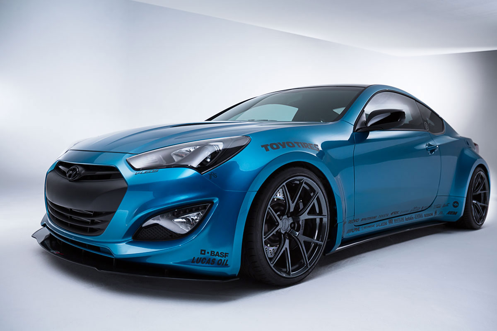
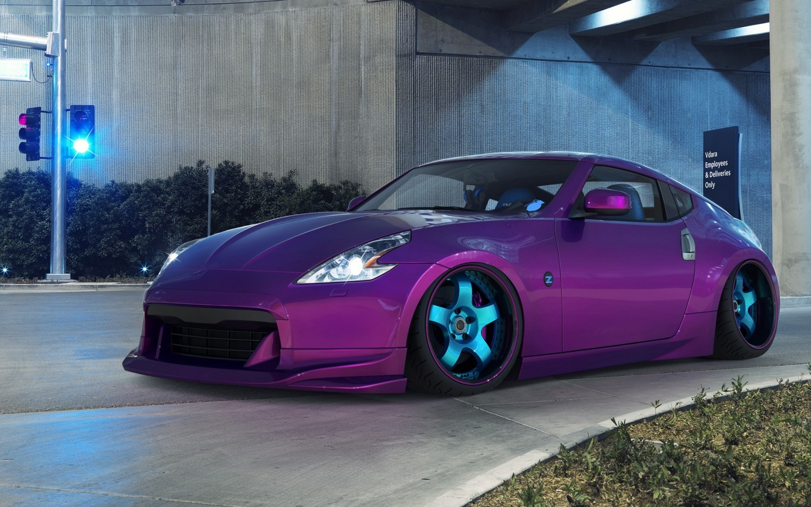
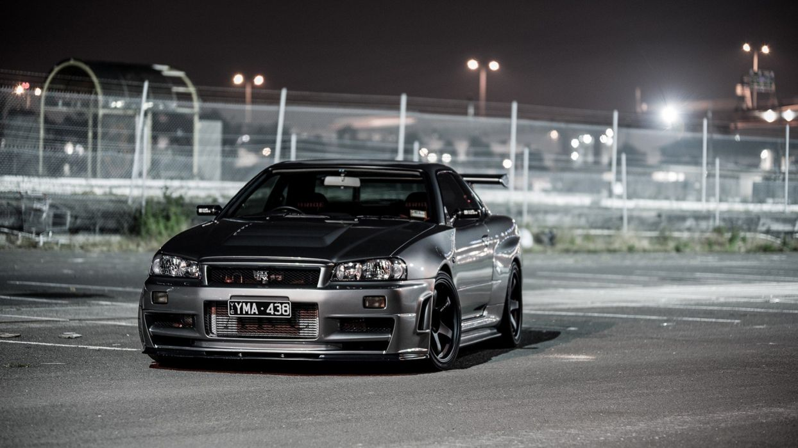

R.I.C.E. burner is a pejorative, originating as a racist stereotype for East Asian people in the 1930s, and has been used since the 1960s for Japanese motorcycles,
and later to include Japanese cars, then extended to any East Asian-made vehicles. ... The term is often defined as offensive or racist stereotyping.But in reality
it is a meaningful acrnoym. R.I.C.E. is and acronym for Race Inspired Cosmetic Enhancements

The Hyundai Genesis is an executive four-door, five passenger, rear or all-wheel-drive full-size
luxury sedan manufactured and marketed by Hyundai. The Hyundai Genesis debuted in 2008 until Genesis
spun off as a separate entity in 2017, rebadging the vehicle as the G80.[1] Introduced in concept form
at the 2007 New York International Auto Show,

On December 30, 2008 the 370Z was introduced as a 2009 model. In June 2009, the second generation
2009 Nismo 370Z debuted. This was followed by the introduction of the 2010 370Z Roadster in late
summer of 2009. 370Z (Z34) is powered by Nissan's 3.7 liter V6 engine, the VQ37VHR.

The legendary Skyline, first introduced in 1957, was originally built by Japan's Prince Motor Company.
Production of the Prince Skyline lasted from 1957 until 1967. Today the Skyline is most recognized as the
influential predecessor to the modern GT-R.